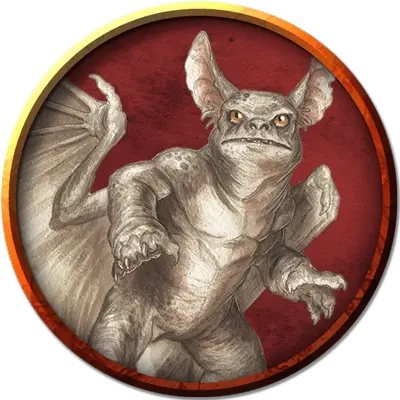

Гомункул Мэдгота
Maddgoth's Homunculus
Большой Конструкт, нейтральный, именной НИП

Класс Доспеха 13 (природный доспех)
Хиты 55 (10к10)
Скорость 20 футов, летая 40 футов
| мод | спас | ||
|---|---|---|---|
| СИЛ | 15 | +2 | +2 |
| ЛОВ | 15 | +2 | +2 |
| ТЕЛ | 11 | +0 | +0 |
| мод | спас | ||
|---|---|---|---|
| ИНТ | 10 | +0 | +0 |
| МДР | 10 | +0 | +0 |
| ХАР | 7 | −2 | −2 |
Иммунитет к урону яд
Иммунитет к состояниям очарование, отравление
Чувства тёмное зрение 60 футов, пассивное Восприятие 10
Языки Общий, Бездны, Гномий, Драконий
Опасность 2 (450 опыта)
Бонус мастерства +2
Особенности
Языки. - понимает языки своего создателя, но не говорит.
Телепатическая связь. Если гомункул и его хозяин находятся на одном плане существования, гомункул может магическим образом передавать все, что ощущает, своему хозяину, и они могут общаться между собой телепатически.
Действия
Укус. Рукопашная атака оружием: +4 к попаданию, досягаемость 5 футов, одно существо. Попадание: 9 (2к6 + 2) колющего урона, и цель должна преуспеть в спасброске Телосложения Сл 10, иначе станет отравленной на 1 минуту. Если спасбросок провален на 5 или больше единиц, цель вместо этого становится отравленной на 5 (1к10) минут, и пока отравлена таким образом, она лишена сознания.
Описание
Гомункул Мэдгота ждет возвращения своего хозяина. Тот факт, что гомункул не исчез, говорит о том, что Мэдгот все еще жив, но их телепатическая связь разорвана из-за того, что они больше не находятся на одном плане существования.
Является ли это разъединение сознательным выбором Мэдгота, неизвестно. Волшебник может быть изолирован в демиплане, заключен в зеркало похищения жизни [mirror of life trapping] или путешествовать по слоям Бездны.
Страдающий от одиночества гомункул жаждет воссоединиться со своим создателем. Он также хочет избавить замок Мэдгота от вторгшегося сюда волшебного дракончика. Персонажи могут произвести впечатление на гомункула и заслужить его доверие, убив волшебного дракончика или отпугнув его навсегда от замка. Гомункул не может покинуть замок согласно приказу своего хозяина. В случае получения урона, ведущему к его разрушению, он возрождается в кабинете Мэдгота (зона 25а) заново. Только смерть волшебника может навсегда уничтожить гомункула.
Если гомункула насильно вытащить из замка, его размер возвращается к Крохотному и статблок становится аналогичным обычному
гомункулу [homunculus]. Всякий раз, когда размер существа уменьшается, все хиты, превышающие их новый максимум, теряются. Когда размер гомункула увеличивается, любой полученный им урон, остается и вычитается из его нового максимума количества хитов.